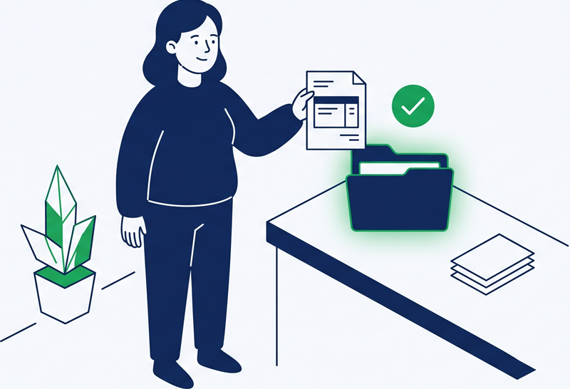
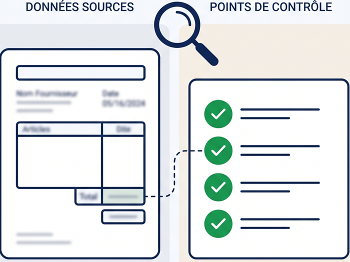
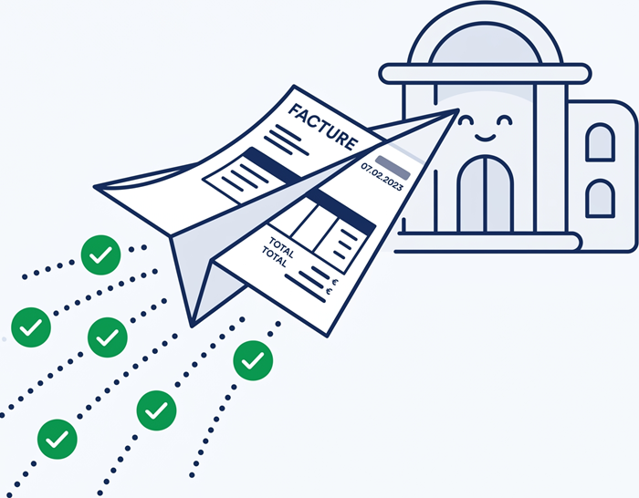

Le principe : un dossier sur votre ordinateur. Vous déposez vos factures, nous faisons le reste — sans changer vos habitudes, sans double saisie.

Continuez à utiliser votre logiciel métier. Exportez votre facture en PDF puis déposez-la dans votre dossier FactuSerein ou glissez-la dans la fenêtre de l'application. Les fichiers sont traités dans les minutes qui suivent.

Notre double lecture — visuelle (IA sur l'image) et texte (extraction du contenu) — extrait vos champs et les affiche à côté de votre facture : émetteur, SIREN du client, numéro, dates, montants HT/TVA/TTC, lignes. Vous comparez, corrigez si besoin, cliquez « Envoyer ». Facture scannée ou divergence détectée ? Un badge vous l'indique et l'envoi attend votre confirmation.

Votre facture est préparée selon les règles françaises, vérifiée puis transmise via une plateforme agréée. Vous suivez chaque facture : transmise, reçue, rejetée ou refusée — avec alerte dès qu'un problème arrive.
| Étape technique | Ce que ça garantit |
|---|---|
| Dépôt de votre facture PDF | Un geste simple, sans changer votre logiciel |
| Double lecture IA (vision + texte) et comparaison | Erreurs de lecture détectées avant envoi ; vous décidez en cas de doute |
| Préparation selon les règles françaises | Votre facture est contrôlée avant sa transmission |
| Validation réglementaire (EN16931 + règles françaises) | Conformité vérifiée avant transmission : moins de rejets |
| Vérification du destinataire dans l'annuaire officiel | La facture part vers la bonne adresse électronique (SIREN) |
| Transmission via plateforme agréée (DGFiP) | Obligation légale remplie : réception 2026, émission 2027, e-reporting |
| Suivi des statuts de cycle de vie (CDAR) | Transmise / reçue / rejetée / refusée — vous savez toujours où en sont vos factures |
| Archivage 10 ans | Obligation de conservation satisfaite |
| Date | Obligation |
|---|---|
| 1er septembre 2026 | Toutes les entreprises (TPE/PME comprises) doivent pouvoir recevoir les factures électroniques via une plateforme agréée |
| 1er septembre 2026 | Grandes entreprises et ETI : obligation d'émission et e-reporting |
| 1er septembre 2027 | PME et micro-entreprises : obligation d'émission des factures B2B et e-reporting (ventes aux particuliers, international) |
Source : impots.gouv.fr — calendrier en vigueur, aucun report à date.